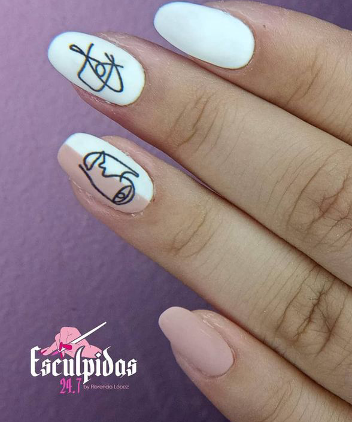
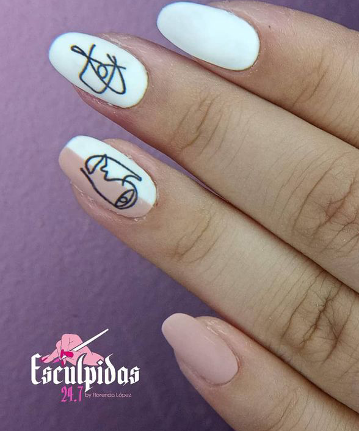

Uñas de acrilico
La manicura para uñas acrílicas se puede realizar mediante puntas o moldes, son complementarias al uso de productos para uñas acrílicas o de gel. Este tipo de uñas también se pueden hacer con gel. Los acrílicos deberían durar de seis a ocho semanas, dependiendo del cuidado y su mantenimiento; por lo tanto, requerirá un relleno cada dos o tres semanas, dependiendo del crecimiento de las uñas. El mantenimiento de las uñas acrílicas se realiza cada 15 a 20 días, siempre dependiendo del crecimiento de tu uña.
Uñas de gel
Son una de las uñas esculpidas más solicitadas por su brillo y flexibilidad, lo que las vuelve bastante resistentes y duraderas. Para hacerlas se usa un esmalte con gran cantidad de gel, y se aplica como un esmaltado común pero es necesario secarlo con una lámpara UV entre capa y capa. Tienen una duración de 15 a 20 días, el esmaltado no se salta y para quitarlas hay que usar un solvente especial para uñas de gel.
Uñas de porcelana
Actualmente las uñas llamadas de porcelana que se consiguen son las elaboradas con una mezcla de gel y acrílico, se deben secar con lámpara de rayos UV y tienen una resistencia mayor que sus predecesoras. Bien cuidadas, llegan a durar unos 6 meses, pero requieren de mantenimiento cada 15 días para rellenarlas. Hay que tener cuidado de que no se astillen porque pueden lesionar la uña que está debajo.